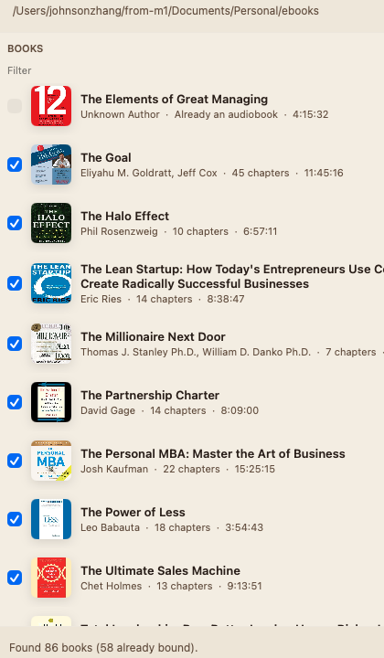

Audiobook Binder is a Mac app that gathers chapter files from a folder — even a nested library — and writes a proper .m4b with title, author, cover, and chapter marks.
Free. Runs on your Mac. Version 1.4.2 · about 3 MB
Point it at one book folder, or a parent folder of many books. Nested wrappers (Calibre-style 43/Title trees) become a folder list on the left. Already-made .m4b files show as already bound so you do not encode them twice.
Metadata is filled from MP3 tags, then OPF/EPUB, then the ebook filename, then the folder name. You can rewrite title, author, narrator, cover, and every chapter before you build. Uncheck a credits track. Play a chapter to be sure. Save the file next to the book, or into ~/Music/Audiobooks.
The finished file is marked as an audiobook for Apple Books (stik=2) with a chapter track. Drop it on Books, or use Open in Books from the footer.

Choose a single book of numbered MP3s, or a library folder. Nested wrappers are scanned automatically. The footer names the folder being read.
When books sit under extra folders, use the folder tree on the left. Filter by title, author, or narrator. Already-bound files stay unchecked.
Fix title and author. Change the cover. Uncheck chapters you do not want. Play any chapter from the list. Bitrate defaults to 64 kbps.
Save in the book folder, or to Music/Audiobooks. Then Show in Finder or Open in Books. The .m4b carries chapters and cover.
Download the DMG, open it, and drag Audiobook Binder into Applications.
This build is signed with an Apple Development certificate. The first time you open it, macOS may warn that it is from an unidentified developer. Right-click the app, choose Open, then Open again.
Also on GitHub Releases. Source is public.
One book: a folder of numbered MP3s, optional cover.jpg, optional ebook/.
A library: a parent whose subfolders are books. Helper folders such as 不分章节 are skipped when numbered chapters exist.
Requires macOS 14 or later.